Øv til prøven i sygeplejen
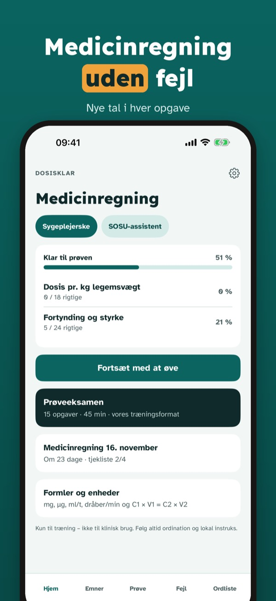
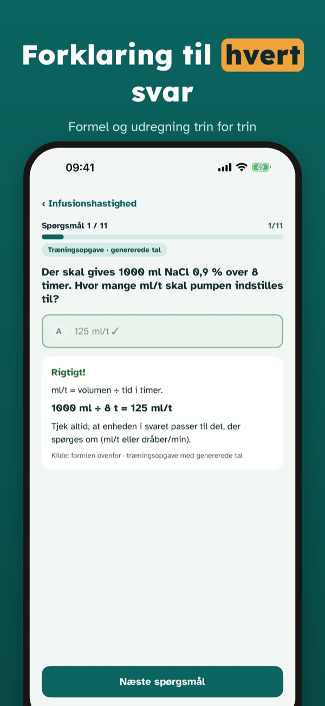
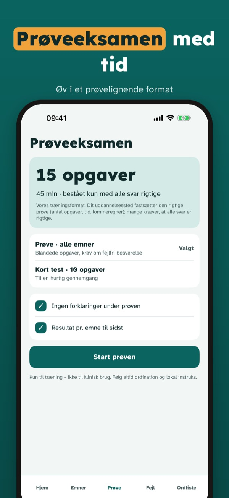
Dosisklar hjælper sygeplejestuderende med at øve medicinregning til prøven – med nye tal i hver opgave og løsningen trin for trin.
Du kan øve 20 spørgsmål, ordlisten og tjeklisten uden køb. Den fulde version er et engangskøb, der låser alle spørgsmål, prøveeksamener og statistik op. Intet abonnement.
Dosisklar er kun til eksamenstræning og må ikke bruges til at beregne doser til patienter. Appen er uafhængig og ikke tilknyttet uddannelsesstederne.
Terms of Use (EULA): https://www.apple.com/legal/internet-services/itunes/dev/stdeula/
Privacy: https://baytechbv.github.io/privacy/dosering-nordic/
Harjoittele lääkelaskukoetta
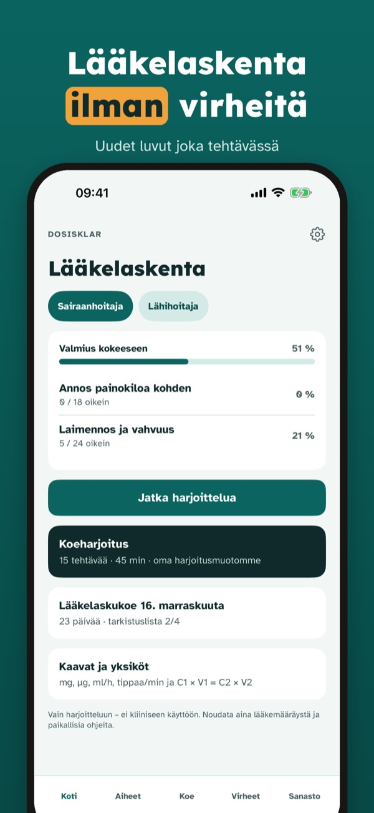
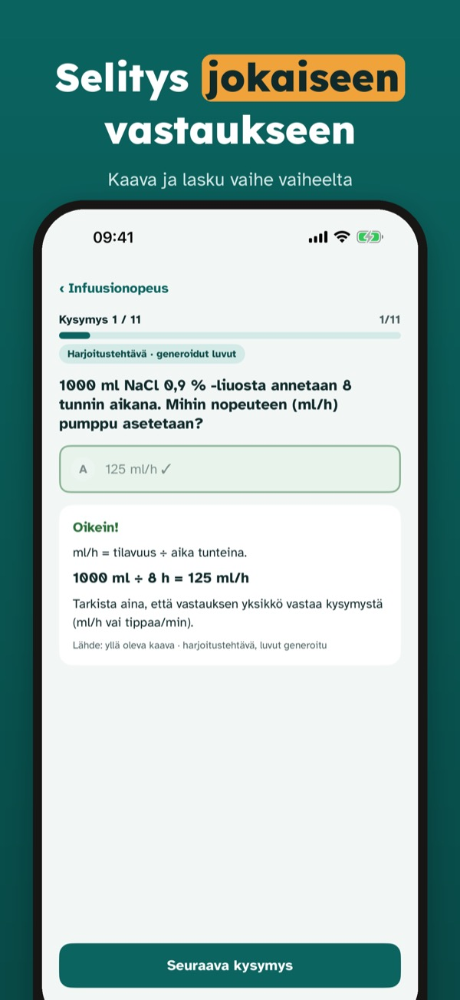
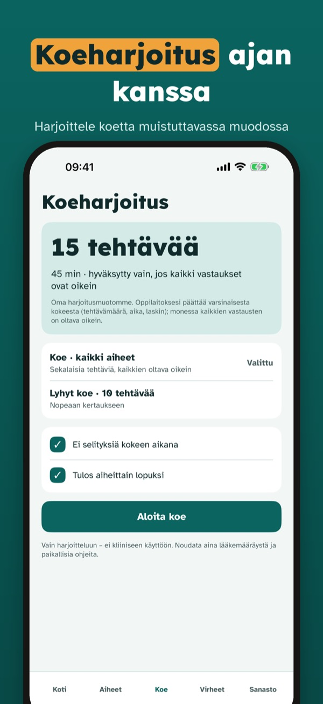
Dosisklar auttaa hoitotyön opiskelijoita harjoittelemaan lääkelaskentaa – uudet luvut jokaisessa tehtävässä ja ratkaisu vaihe vaiheelta.
Voit harjoitella 20 kysymystä, sanastoa ja tarkistuslistaa ilman ostoa. Täysi versio on kertaosto, joka avaa kaikki kysymykset, koeharjoitukset ja tilastot. Ei tilausta.
Dosisklar on tarkoitettu vain koeharjoitteluun, eikä sillä saa laskea potilaiden annoksia. Sovellus on itsenäinen eikä liity oppilaitoksiin.
Terms of Use (EULA): https://www.apple.com/legal/internet-services/itunes/dev/stdeula/
Privacy: https://baytechbv.github.io/privacy/dosering-nordic/
Øv til prøven i sykepleien
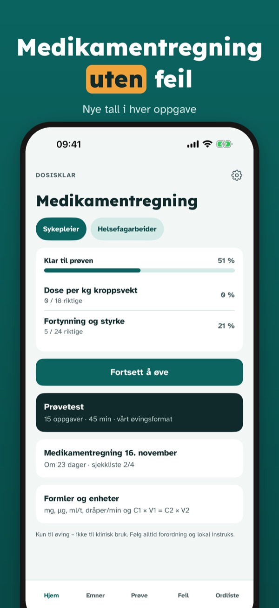
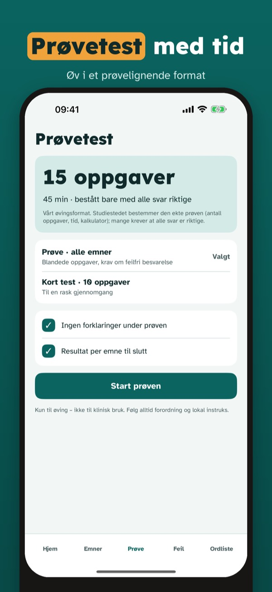
Dosisklar hjelper sykepleiestudenter å øve medikamentregning til prøven – med nye tall i hver oppgave og løsningen trinn for trinn.
Du kan øve på 20 spørsmål, ordlisten og sjekklisten uten kjøp. Fullversjonen er et engangskjøp som låser opp alle spørsmål, prøvetester og statistikk. Ingen abonnement.
Dosisklar er kun for eksamenstrening og skal ikke brukes til å beregne doser til pasienter. Appen er uavhengig og ikke tilknyttet utdanningsstedene.
Terms of Use (EULA): https://www.apple.com/legal/internet-services/itunes/dev/stdeula/
Privacy: https://baytechbv.github.io/privacy/dosering-nordic/
Öva inför tentan i vården
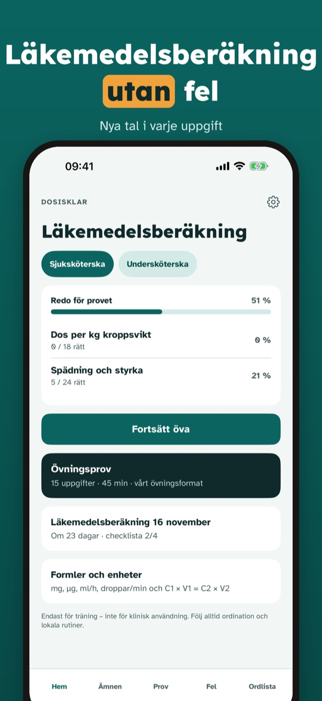
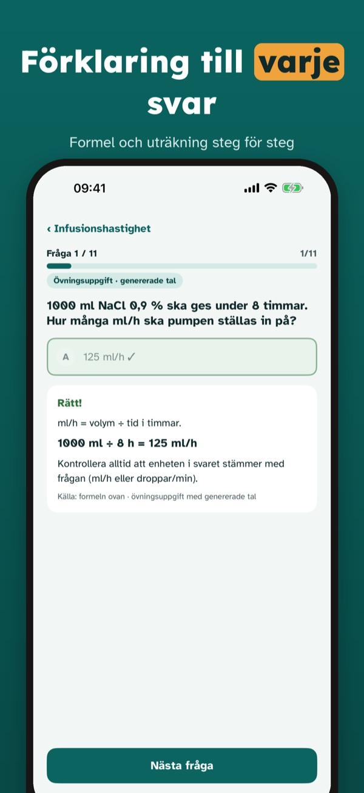
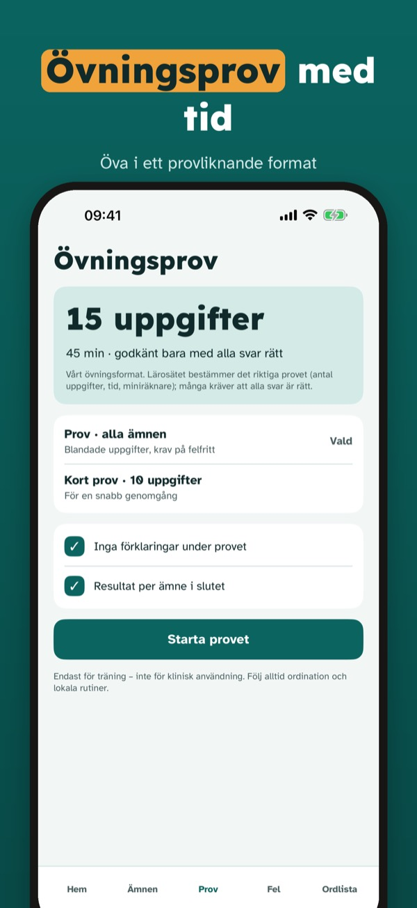
Dosisklar hjälper sjuksköterskestudenter att öva läkemedelsberäkning – med nya tal i varje uppgift och lösningen steg för steg.
Du kan öva 20 frågor, ordlistan och checklistan utan köp. Fullversionen är ett engångsköp som låser upp alla frågor, övningsprov och statistik. Ingen prenumeration.
Dosisklar är endast för tentaträning och får inte användas för att beräkna doser till patienter. Appen är fristående och inte kopplad till lärosätena.
Terms of Use (EULA): https://www.apple.com/legal/internet-services/itunes/dev/stdeula/
Privacy: https://baytechbv.github.io/privacy/dosering-nordic/
Oefen rekenen voor de zorg
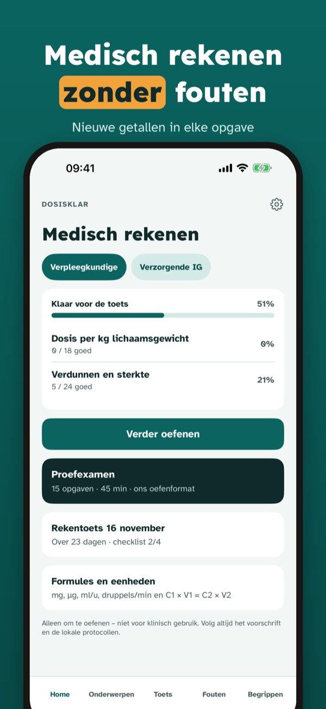
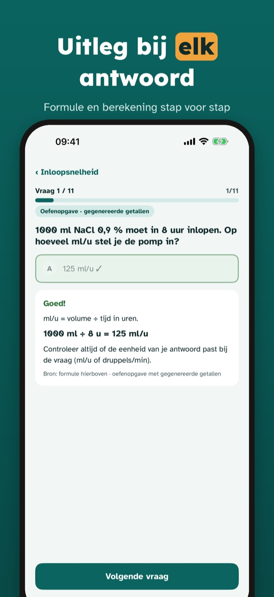
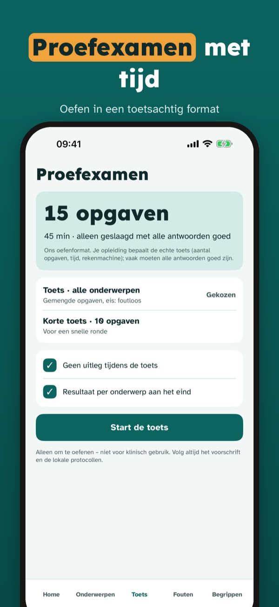
Dosisklar helpt verpleegkunde-studenten medisch rekenen te oefenen – met nieuwe getallen in elke opgave en de oplossing stap voor stap.
Je kunt 20 vragen, de begrippenlijst en de checklist zonder aankoop gebruiken. De volledige versie is een eenmalige aankoop die alle vragen, proefexamens en statistiek ontgrendelt. Geen abonnement.
Dosisklar is alleen bedoeld voor toetstraining en mag niet worden gebruikt om doses voor patiënten te berekenen. De app is onafhankelijk en niet verbonden aan opleidingen.
Terms of Use (EULA): https://www.apple.com/legal/internet-services/itunes/dev/stdeula/
Privacy: https://baytechbv.github.io/privacy/dosering-nordic/
Révisions pour étudiants IDE
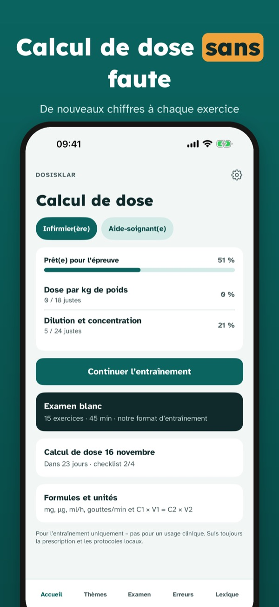
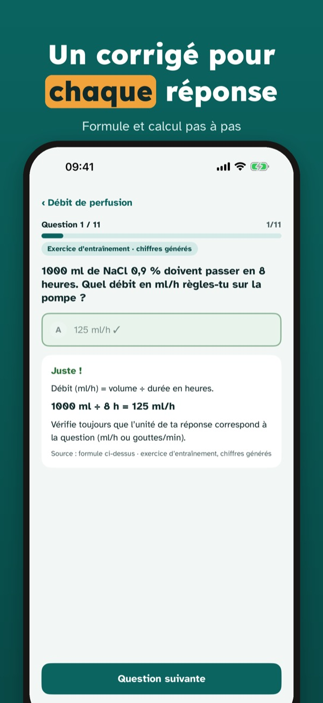
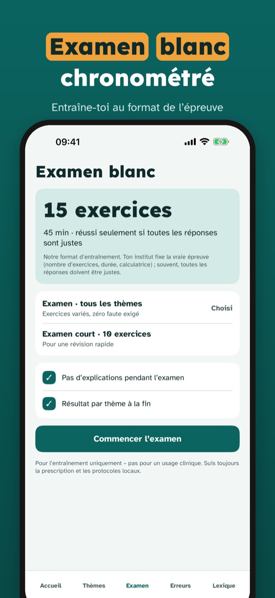
Dosisklar aide les étudiants en soins infirmiers à s’entraîner au calcul de dose – avec de nouveaux chiffres à chaque exercice et un corrigé pas à pas.
Tu peux t’entraîner sur 20 questions, le lexique et la checklist sans achat. La version complète est un achat unique qui débloque toutes les questions, les examens blancs et les statistiques. Sans abonnement.
Dosisklar sert uniquement à réviser et ne doit pas être utilisé pour calculer des doses pour des patients. L’app est indépendante et n’est liée à aucun institut de formation.
Terms of Use (EULA): https://www.apple.com/legal/internet-services/itunes/dev/stdeula/
Privacy: https://baytechbv.github.io/privacy/dosering-nordic/